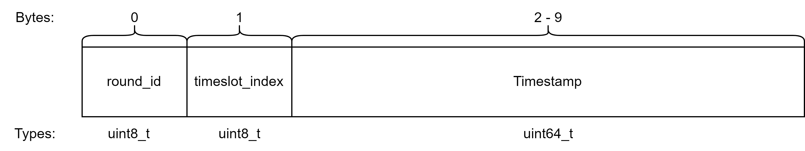

Conception of BlueSync in Zephyr RTOS
The design of BlueSync in Zephyr RTOS was driven by the need for an efficient, scalable, and accurate time synchronization protocol tailored to the constraints of BLE Mesh in linear sensor deployments (e.g., tunnels).
Objectives
- Achieve microsecond-level synchronization accuracy over BLE Mesh.
- Support low-power, resource-constrained devices.
- Use BLE Extended Advertising for long-range, non-connectable broadcasts.
- Enable multi-hop time propagation across a linear network.
- Integrate seamlessly with Zephyr RTOS modules and drivers.
Key Design Principles
- Centralized Authority Node
A gateway node with NTP or GPS access serves as the synchronization anchor. - One-Way Sync
Clients passively receive extended advertisements carrying timestamps. - Precise Hardware Timestamping
Clients use hardware timers (e.g., RTC, TIMER2) to timestamp sync packet arrival. - Linear Regression Drift Correction
Clock offset and drift are estimated using linear regression over multiple timestamp pairs. - Chained Multi-Hop Propagation
Downstream nodes receive re-broadcasted sync packets and synchronize in turn.
BlueSync Packet Format

| Field | Size | Description |
|---|---|---|
round_id | 1 byte | ID for the sync round, incremented by Authority |
slot_idx | 1 byte | Optional slot index (can be used for future use) |
timestamp | 8 bytes | Master time in microseconds (Unix epoch) |
State Machine Overview

Authority Node (Gateway)
STOP: Initial idle state.ADV: Starts a sync round, incrementsround_id, advertises a burst of sync packets, returns toSTOP.
Client Node (Sensor)
SCAN_WAIT_FOR_SYNC: Listens for sync packets.SYNC: Collects timestamp pairs.UPDATE: Computes and applies clock correction using regression.ADV: Optionally rebroadcasts sync packet; returns toSCAN_WAIT_FOR_SYNC.
Synchronization Flow
- Authority broadcasts sync message with timestamp.
- Clients timestamp the reception and store local/master pairs.
- After receiving N messages, clients estimate slope and offset.
- Logical time is corrected using: logical_time(t) = slope * local_time(t) + offset
- Clients forward sync message to downstream nodes.
- The process repeats down the linear topology.
Generated by